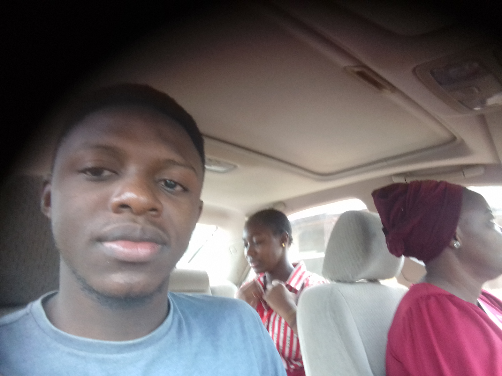
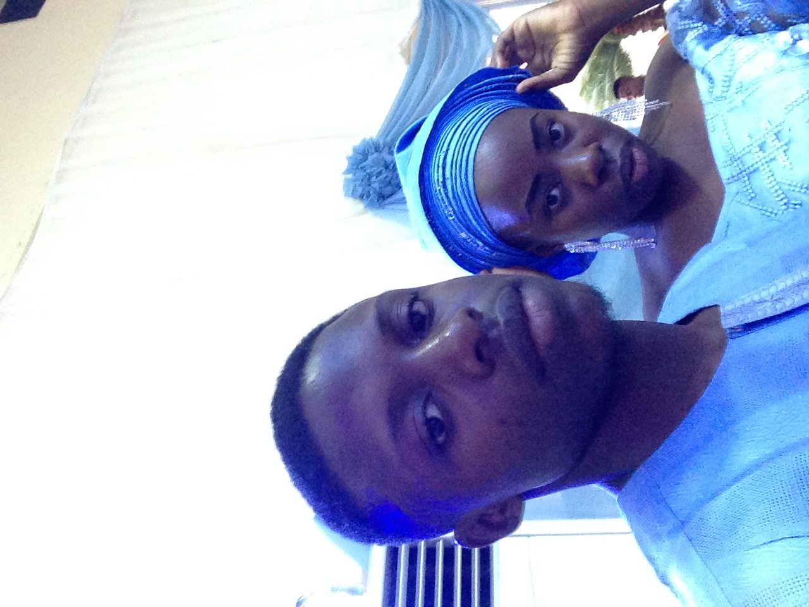
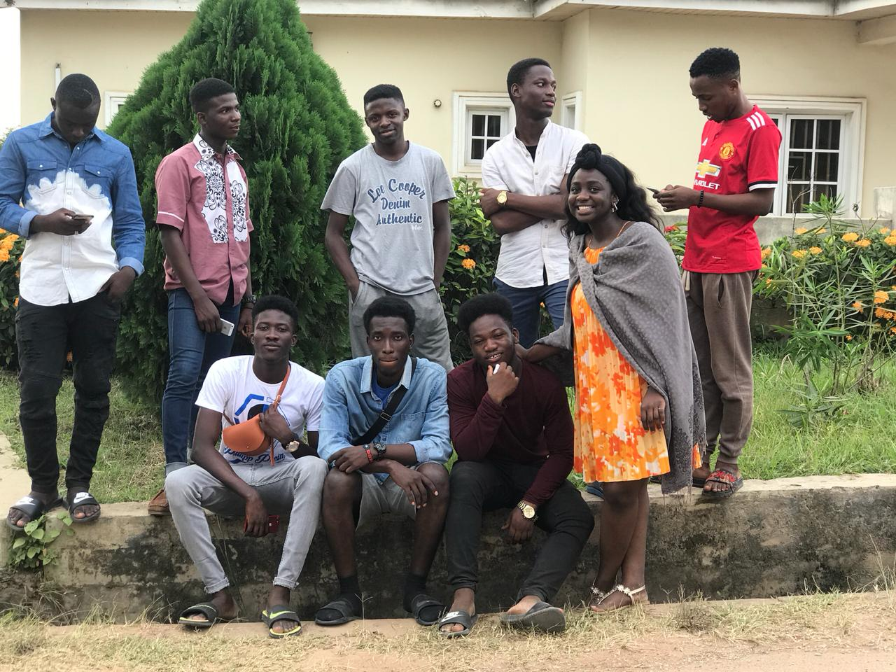
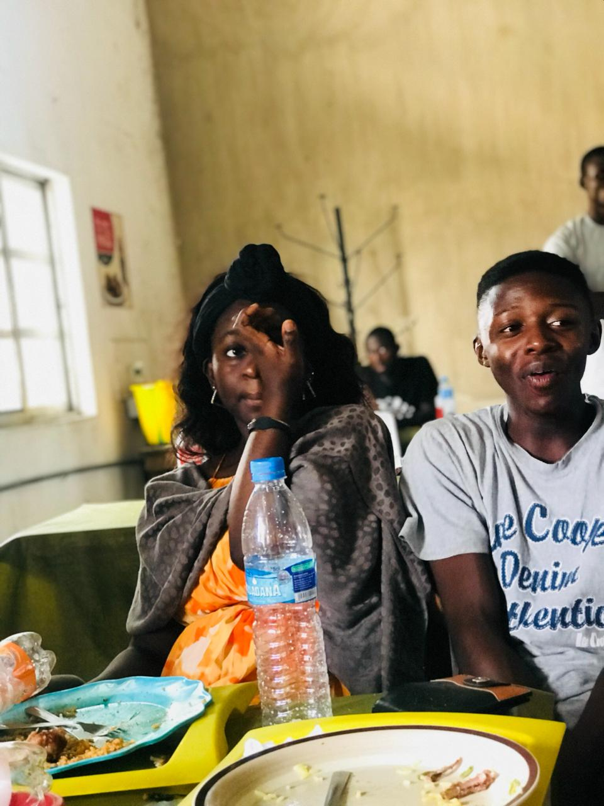
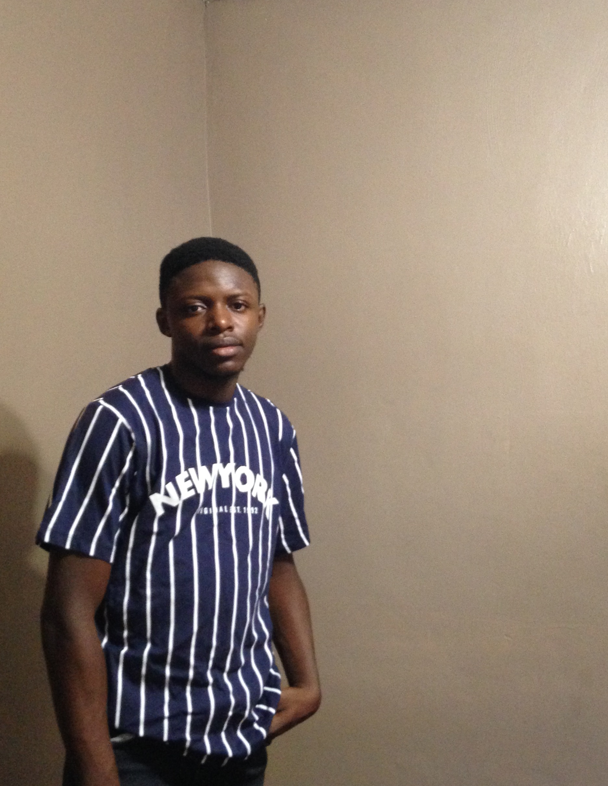
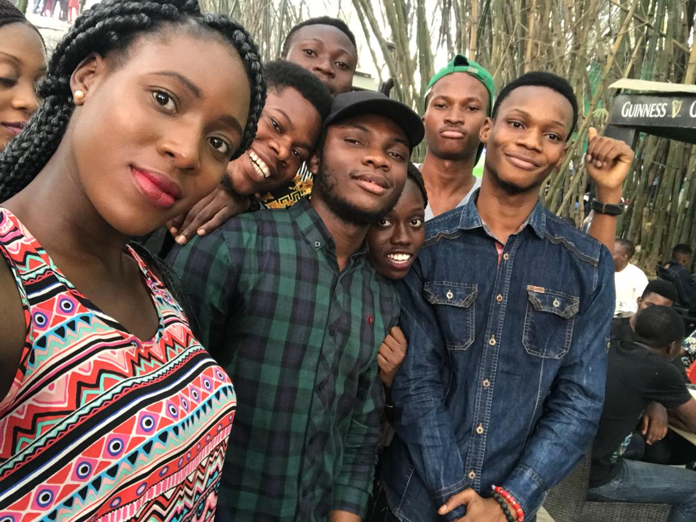

300Level CS Student, a Frontend Developer and Entrepreneur
I am an undergraduate student of the Federal Univeristy of Agriculture Abeokuta, studying Computer Science and expected to graduate in Year 2020.
I had my Secondary School education at Sacred Heart Catholic College from September 2010 to July 2016 where i graduated as the 3rd Best student in Physical & Health Education.
During my time at Sacred Heart Catholic College, i was a member of the JETS club society and i also won medals duing the schools Bi-ennial Sport Competition.
As for online courses, i am currently taking a Complete Web Developer course on Udemy. I have completed the following courses: (1) The Fundamentals of Digital Marketing - Google Digital Skills 2019,
(2) Android Developer Bignner Bundle - Andela ALC2.0, (3) Startup Development Course - Y Combinator Startup School 2018
(1) In the Summer of 2015, i worked as an intern in the Electrical Department at Industrial Project International Ltd.
During my time there, Worked at the electrical department, learning about electrical requirements and how installations are carried out at the company.
(2) Cralocs - A side project i built between 08/2018 – 11/2018. It was an online marketplace for film location rental. It was built using Sharetribe and Tilda.
was responsible for the project management - website development, product design, and marketing.
Cralocs was featured on ProductHunt and was accepted into the prestigious Y Combinator Startup School
(3) Ontripp.com - A website where tourists can find and book tours & activities to do in Nigeria. https://ontripp.com. It was built the using WordPress, with integrations of many tools such as Paystack, Google Forms, Mailchimp etc.
Working in a team of 2, i am responsible for the project management - product design, part of the website development and solely with the marketing of the website to tour operators and selling of tours to the tourists using digital marketing.
     
I have a vast combination of both technical and inter personal skils. So far, i have been able to acquire the following technical skills: HTML5, CSS3, BOOTSTRAP3, JAVASCRIPT, Wordpress and i am currently learning JAVASCRIPT frameworks - Angular.js and REACT.
My personal skills includes the following: an Idea person, a creative thinker, an innovative person, ability to work under pressure, resourceful, and a good communicator.